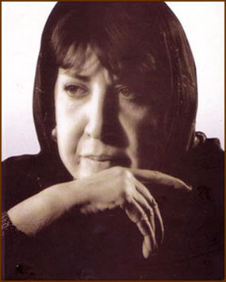
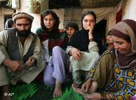
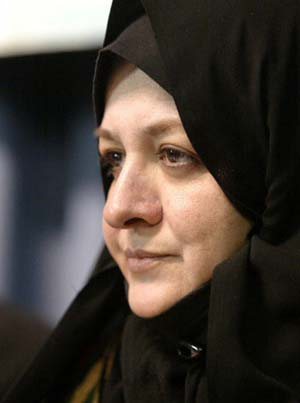
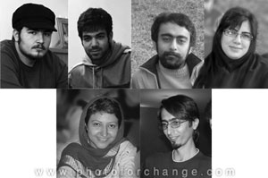
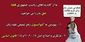

مقالههاى اين بخش
- 12 خرداد 1388
مهدی کروبی در مورددیدگاههای خود در حوزه مسایل زنان بیانیه ای به این شرح صادر کرد:
ادوارنیوز
- 12 خرداد 1388

گفت و گو با سيمين بهبهانی، پیرامون همگرايی جنبش زنان برای طرح مطالبات در انتخابات
رادیو زمانه
- 10 خرداد 1388
در قالب گزارههايي جامع؛
قلم
- 9 خرداد 1388
زنان و قوانین
دویچه وله
- 9 خرداد 1388

انتخابات
گویا
- 7 خرداد 1388

گفت و گو با انارکلی هنريار، عضو دفتر مستقل حقوق بشر افغانستان
رادیو فردا
- 6 خرداد 1388
بازتاب
گویا
- 5 خرداد 1388
گفت و گو با گوهر بیات، مادر جلوه جواهری
رادیو زمانه
- 4 خرداد 1388

پاسخی به مقاله : به نام همگرایی به جای کمپین
میدان زنان
- 3 خرداد 1388
برای جلوه و کاوه
کانون زنان ایرانی
- 3 خرداد 1388
فاطمه راکعی:
جمهوریت
- 2 خرداد 1388

انتخابات
روزآنلاین
- 2 خرداد 1388

زنان منطقه
دویچه وله
- 31 اردیبهشت 1388
گفتگو با زهرا اشراقی
فردا نیوز
- 30 اردیبهشت 1388
انتخابات
دویچه وله
- 29 اردیبهشت 1388

فاطمه راکعی:
جمهوریت
- 28 اردیبهشت 1388

امنیت اجتماعی
خبرنامه امیرکبیر
- 28 اردیبهشت 1388

بازتاب
خبرنامه امیرکبیر
- 26 اردیبهشت 1388
خشونت خانگی
میدان زنان
- 23 اردیبهشت 1388
صدای دیگر
رادیو فردا
- 20 اردیبهشت 1388
گزارش کنفرانس عقبنشینی سکولار؟ چالشهای بنیادگرایی مذهبی در دانشگاه یورک کانادا
رادیو زمانه/محمد تاجدولتی
- 19 اردیبهشت 1388

در گفت و گو با مهوش شیخ الاسلامی
روزآنلاین
- 17 اردیبهشت 1388

اقدام علیه امنیت ملی
زندگی در آکواریوم
- 17 اردیبهشت 1388

اقدام امنیتی
مردمک
- 16 اردیبهشت 1388

نقد شكوه ميرزادگي به ائتلاف انتخاباتي زنان
خبرنامه گويا
- 16 اردیبهشت 1388
گفت و گو با رفعت بیات ، کاندیدای ریاست جمهوری
رادیو فرانسه
- 15 اردیبهشت 1388

دستگیری زنان در روز کارگر در مصاحبه با اردلان
روزآنلاین
- 14 اردیبهشت 1388
گفت و گو با دکتر آزاده کیان، جامعهشناس و استاد دانشگاه در پاریس
رادیو زمانه
- 14 اردیبهشت 1388
طرح امنیت اجتماعی
دویچه وله
- 13 اردیبهشت 1388
گفتگو با پروین اردلان
رادیو فرانسه/ لیدا پرچمی
| ... | | | | | 1170 | | | | | ... |